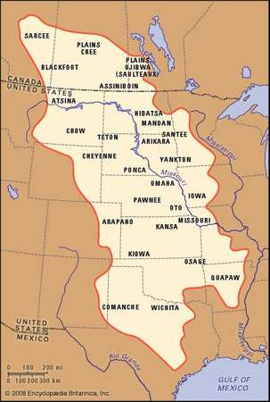

Northern Great Plains
The Northern Great Plains spans more than 180 million acres and crosses five U.S. states and two Canadian provinces. As large as California and Nevada combined, this short- and mixed-grass prairie is one of only four remaining intact temperate grasslands in the world.
WWF ProjectsSustainable Ranching Initiative
|
 |
|---|